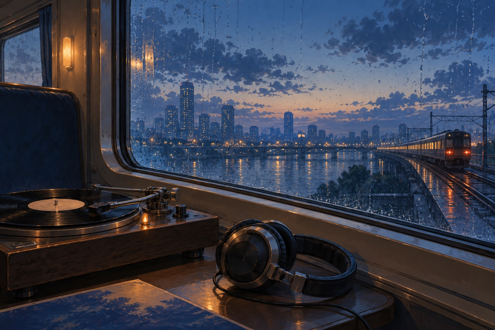
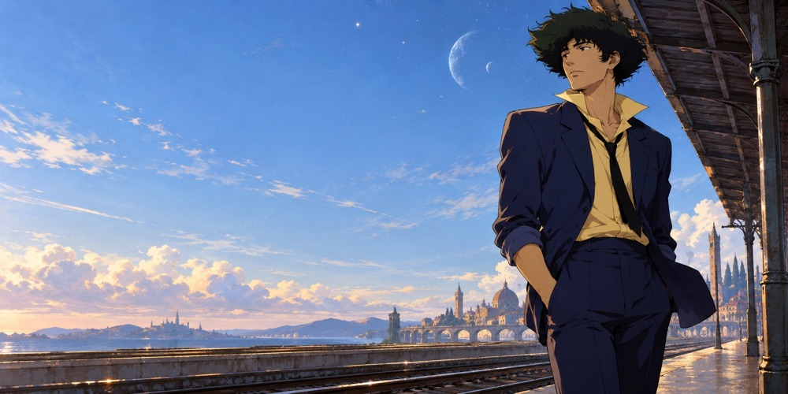
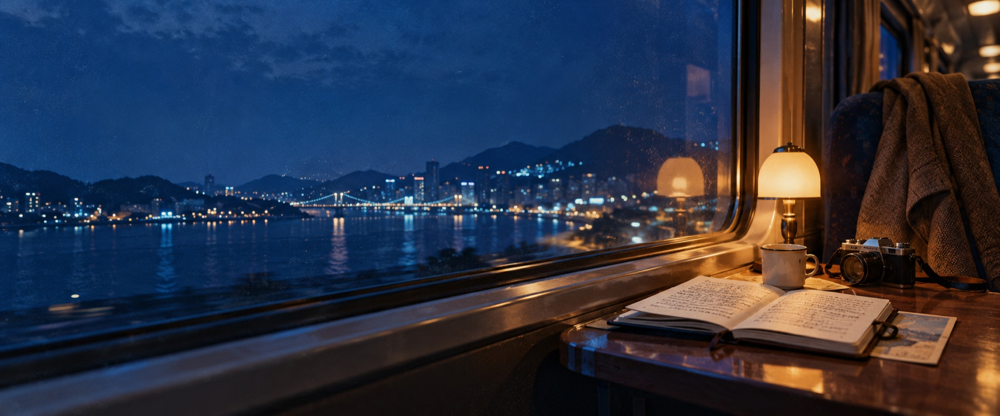

A PRIVATE SPACE–TIME ARCHIVE / 001
SOMEWHERE BETWEEN ARRIVING AND LEAVING
We are all
travelers through
time and space.
A few fleeting moments kept among maps, records, and pages.
A CABINET OF PASSING MOMENTS
What I Carry
Cities, songs, animation, and paper. Unrelated things that accompanied me for a while.

01 / PLACES · DEMO ARCHIVE
Places Passed Through
Cities remembered as fragments, not destinations.

02 / FAVORITE SONG · EASON CHAN
Mian Mian
No one knew it was the last time we met.

03 / FAVORITE ANIME
Cowboy Bebop
Still moving through a vast and quiet universe.

04 / WORDS
Pages & Margins
Some sentences keep living in us long after we read them.
05 / FRAGMENTS
Passing Thoughts
Even a note about rain is worth keeping.

06 / COLLECTIONS
Small Evidence
Tickets, postcards, and things I could not throw away.
07 / TIMELINE
Chapters of Time
The next station still has no name.

08 / BLOG · JOURNAL
Notes from the Road
Longer stories about places, ordinary days, and the small things worth remembering.
ONE TIME, ONE MEETING
One time, one meeting.